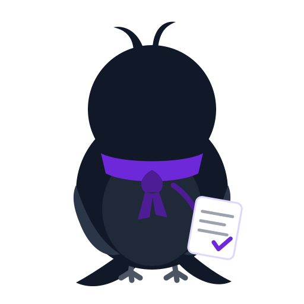

01 · FRONTcompanion
Current Mira
Eye contact. Warm, direct, “I see your report.” Unchanged from the app.
 64
64empty stateonboarding“Mira is ready”
The side profile was not a 2026 decision. It was a mark decision, and it cost the character her eye contact. The current Mira looks forward — that is her strongest asset. Keep it for the character; use the profile only as a mark.
Eye contact. Warm, direct, “I see your report.” Unchanged from the app.
64Still sees you, but is already working on the problem. The best Story pose.
 64
64No eye contact. Strong silhouette. A glyph, not the companion.
 64
64No face. Carries the proof. Used on the route, never at a gate.

Front when Mira talks to a person. 3/4 when she works on the task. Profile only when she becomes a mark. Back only when she walks the route. One character, four contexts — not four mascots.